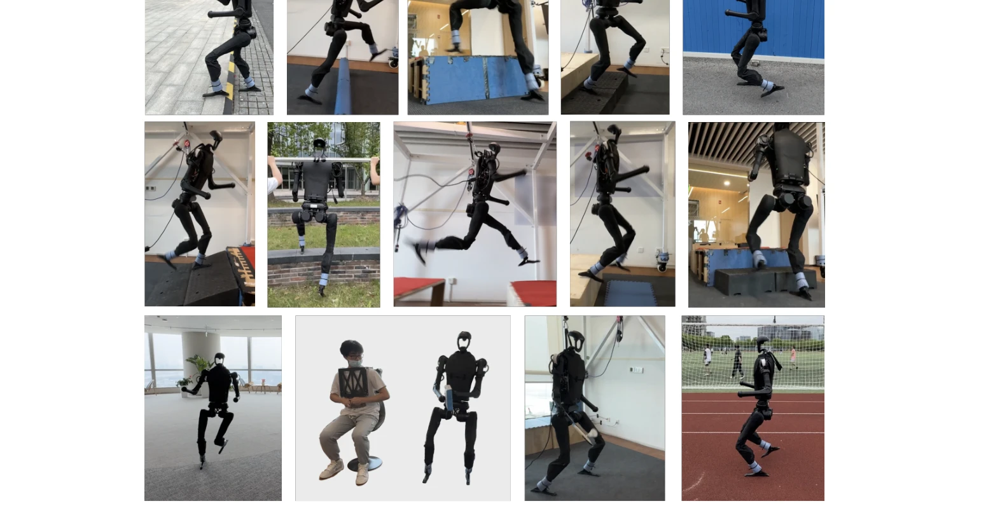
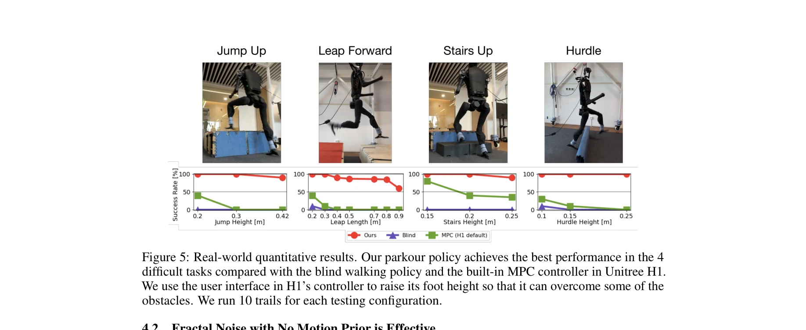
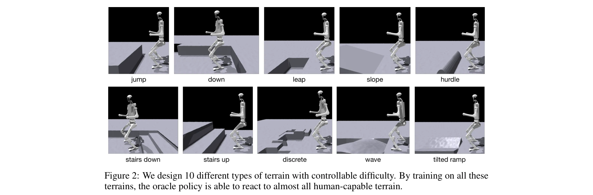

저자: Ziwen Zhuang, Shenzhe Yao, Hang Zhao | 날짜: 2024-06-15 | URL: https://arxiv.org/abs/2406.10759

Figure 1: We present a single vision-based end-to-end whole-body-control parkour policy for humanoid robots
본 논문은 시각 기반 end-to-end 제어 정책을 통해 인간형 로봇이 모션 프리어 없이 다양한 파쿠르 기술(점프, 허들 뛰기, 갭 넘기 등)을 수행할 수 있도록 학습하는 통합 프레임워크를 제시한다.

Figure 5: Real-world quantitative results. Our parkour policy achieves the best performance in the 4

Figure 2: We design 10 different types of terrain with controllable difficulty. By training on all these
총평: 본 논문은 모션 프리어 없이 인간형 로봇이 다양한 파쿠르 기술을 통합적으로 학습하고 실제 배포할 수 있게 하는 혁신적 프레임워크를 제시하며, fractal noise를 통한 자연스러운 보행 유도와 효율적인 vision 정책 증류 기법으로 로봇 운동 능력의 경계를 의미 있게 확장한다.